1장시작하기 전에
당신이 곧 만들게 될 것이 무엇인지, 그리고 그것이 왜 특별한지 — 큰 그림을 먼저 그립니다.
당신의 웹툰이 살아 움직인다면
지금까지 웹툰은 ‘보는 것’이었습니다. 독자는 화면을 아래로 내리며 멈춰 있는 그림을 차례로 읽어 갈 뿐이었죠. 그런데 만약, 독자가 화면을 내리는 그 순간 캐릭터가 걸어 들어오고, 빗방울이 떨어지고, 대사가 하나씩 살아나 말을 건다면 어떨까요? 독자가 갈림길에서 직접 선택을 하고, 그 선택에 따라 이야기가 다르게 흘러간다면요?
그것이 바로 인터랙티브 웹툰이고, 플레이툰 메이커는 그것을 당신의 손으로 만들게 해 주는 도구입니다. ‘보는 웹툰’을 ‘함께 노는 이야기’로 바꾸는 일 — 그 시작점에 지금 당신이 서 있습니다.
좋은 소식이 하나 더 있습니다. 코딩은 한 줄도 필요하지 않습니다. 준비한 그림과 소리를 올리고, 무대 위에 배치하고, ‘언제 어떻게 움직일지’를 시간표에 그려 넣기만 하면 됩니다. 마치 연출가가 배우에게 동선을 일러 주듯이 말이죠. 복잡한 기술은 메이커가 알아서 처리합니다. 당신은 이야기에만 집중하면 됩니다.
플레이툰 메이커가 일하는 방식 — 스크롤과 테이크
플레이툰 웹툰은 일반 웹툰과 똑같이 위에서 아래로 스크롤하며 읽습니다. 독자에게 익숙한 그 방식 그대로입니다. 다른 점은, 화면을 내릴 때마다 멈춘 그림이 아니라 살아 움직이는 한 장면이 펼쳐진다는 것입니다.
이 ‘한 장면’의 단위가 바로 테이크(Take)입니다. 영화에서 한 컷을 ‘테이크’라 부르듯, 플레이툰에서도 하나의 테이크가 하나의 살아 있는 장면을 담습니다. 독자가 스크롤로 한 테이크에 들어서면 그 안의 애니메이션이 시작되고, 캐릭터가 움직이고 소리가 흐르고, 때로는 독자의 터치를 기다립니다. 그리고 다시 스크롤하면 다음 테이크로 — 다음 장면으로 넘어갑니다.
※ 이 설명서는 현재 버전(v0.6.0 RC.7) 기준으로, 세로 16:9 웹툰을 테이크 단위로 만드는 작업을 다룹니다.
그래서 작품을 만드는 일은 이렇게 정리됩니다. 테이크라는 장면을 쌓아 이야기의 흐름을 만들고, 각 테이크 안을 움직임으로 채우고, 독자가 반응할 지점을 심는 것. 이 설명서는 바로 그 순서를 따라갑니다.
작업의 전체 흐름
작품 하나를 완성하기까지는 대체로 다음 순서를 따릅니다. 이 설명서도 이 순서를 그대로 따라갑니다.
| 단계 | 하는 일 | 관련 장 |
|---|---|---|
| ① 준비 | 그릴 장면, 등장 그림, 대사, 소리를 미리 준비합니다(메이커 밖에서). | 1장 |
| ② 만들기 | 작품의 뼈대(테이크·패널)를 익히고 첫 그림을 화면에 띄웁니다. | 3장 |
| ③ 채우기 | 그림·말풍선·소리 같은 재료를 메이커로 가져옵니다. | 4장 |
| ④ 움직이기 | 각 요소가 등장·유지·퇴장하며 어떻게 움직일지 설정합니다. | 5장 |
| ⑤ 반응 넣기 | 독자의 터치·선택에 반응하는 인터랙션을 설정합니다. | 6장 |
| ⑥ 확인·발행 | 독자 입장에서 미리보고, 저장·발행합니다. | 7장 |
시작하는 두 가지 방법
플레이툰 메이커는 다음 흐름으로 시작합니다. 먼저 랜딩 페이지에서 시작하기를 누르면 계정 만들기 / 로그인 페이지로 이어지고, 로그인하면 내 작업 공간인 워크스페이스가 열립니다. 워크스페이스에서는 진행하던 프로젝트를 이어서 할지, 새 프로젝트를 시작할지를 고르며, 선택하면 비로소 에디터 창으로 들어옵니다.
에디터에 들어오면 가장 먼저 새 프로젝트 창이 나타납니다. 여기서 두 갈래로 시작할 수 있습니다.
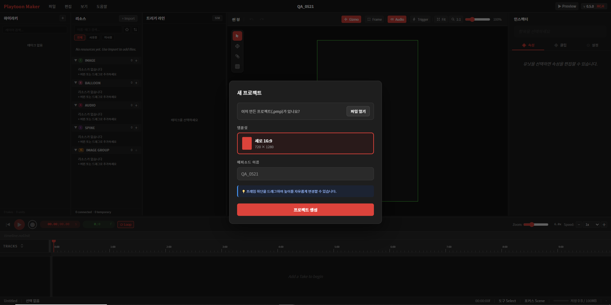
가. 새로 만들기 — 템플릿(작품 화면 비율)을 고르고 에피소드 이름을 입력한 뒤 프로젝트 생성을 누릅니다. 현재 버전에서는 세로형 세로 16:9 (720 × 1280) 하나를 제공합니다. 세로로 스크롤하는 웹툰에 맞춘 크기이며, 만든 뒤 프레임 하단을 드래그해 높이를 자유롭게 늘릴 수 있습니다.
나. 이어서 작업하기 — 이미 만들어 둔 프로젝트 파일이 있다면, 창 위쪽의 파일 열기를 눌러 .pmp 파일을 불러옵니다. .pmp는 플레이툰 메이커의 프로젝트 저장 파일 형식입니다. 이 문서 표지에서 pmp 예시 파일을 내려받았다면, 그 파일을 여기서 불러와 완성된 프로젝트가 어떻게 구성되어 있는지 열어 볼 수 있습니다.
2장화면 둘러보기
프로젝트를 만들면 나타나는 작업 화면을 구역별로 익힙니다. 각 구역의 이름과 역할만 알아도 이후 설명이 쉽게 읽힙니다.
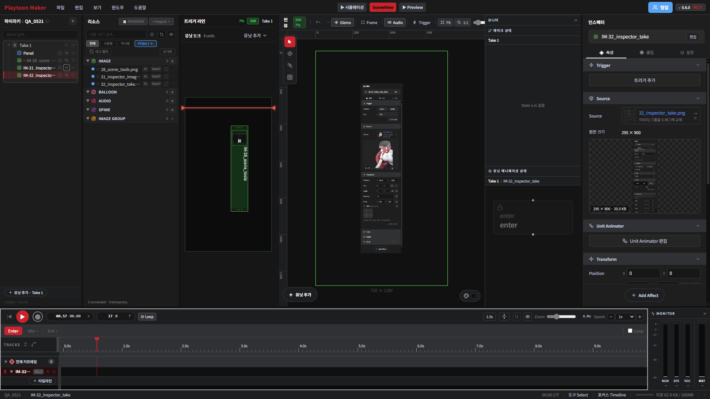
① 상단 바 — 맨 위 가로 막대
왼쪽에 Playtoon Maker 로고와 메뉴(파일 · 편집 · 보기 · 윈도우 · 도움말)가 있습니다. 가운데에는 확인용 버튼 세 개 — 작품을 독자처럼 실행하는 ▶ 시뮬레이션(7장), 편집 화면인 SceneView, 편집하며 바로 확인하는 ▶ Preview(7장) — 가 나란히 있습니다. 오른쪽 끝에는 협업 버튼과 프로그램 버전(v 0.6.0 RC.7)이 표시됩니다.
② 계층(Hierarchy) — 가장 왼쪽 패널
작품의 구조를 나무가지처럼 보여 주는 곳입니다. 테이크(Take) 안에 유닛이 들어가는 형태로, 지금은 Take 1 ▸ Panel이 보입니다. 맨 위 검색창으로 특정 요소를 빠르게 찾을 수 있습니다. (테이크·유닛 개념은 3장에서 설명합니다.)
③ 리소스 — 두 번째 패널
작품에 쓸 재료(그림·소리 등)를 보관하는 창고입니다. 위쪽 + Import 버튼으로 파일을 올리고, 아래는 재료 종류별로 나뉩니다.
| 종류 | 담는 것 |
|---|---|
| IMAGE | 배경·사물 등 일반 이미지 |
| BALLOON | 말풍선 |
| AUDIO | 효과음·배경음악 등 소리 |
| SPINE | 관절이 움직이는 캐릭터 애니메이션(스파인) |
| IMAGE GROUP | 여러 이미지를 묶은 그룹 |
리소스가 많아지면 위쪽 검색창에 이름·태그를 입력해 원하는 재료를 빠르게 찾을 수 있습니다. 그 아래 필터로 전체 · 사용중 · 미사용 · 특정 테이크(예: #Take 1)를 기준으로 걸러 볼 수 있고, 태그 필터·초기화도 있습니다. 각 항목에는 즐겨찾기(★)와 형식 배지(예: WebP)가 표시되고, 카테고리 이름 옆 숫자는 그 종류의 개수입니다.
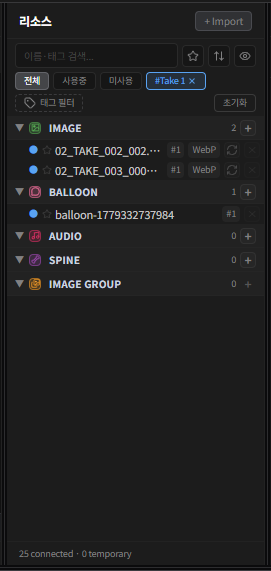
④ 트리거 라인 — 세 번째 패널
웹툰의 세로 스크롤 흐름에 맞춰, 각 유닛이 화면 어느 지점에서 나타날지(발동될지)를 배치하는 곳입니다. 독자가 스크롤을 내리다 특정 지점에 닿으면 그 유닛의 움직임이 시작되는데, 그 ‘시작 지점’을 여기서 정합니다. 유닛 추가 버튼으로 흐름에 배치할 유닛을 더합니다.
역할을 나눠 보면, 트리거 라인은 “언제(어느 스크롤 위치에서) 나타날지”를 큰 흐름으로 잡는 곳이고, 아래의 타임라인은 그 유닛이 나타난 뒤 “어떻게 움직일지”를 정밀하게 짜는 곳입니다. (이 둘의 관계는 5장에서 자세히 다룹니다.)
패널에 보이는 빨간 가로 라인은 지금 독자가 스크롤로 도달한 위치를 나타내는 지시선입니다. 이 선이 위아래로 움직이며 어떤 유닛에 닿으면 그 유닛의 연출이 시작됩니다. 위쪽의 진행률(예: 38%)이 이 스크롤 위치와 연동됩니다. SIM 버튼을 켜면 트리거 라인을 직접 위아래로 움직이며 애니메이션의 시간 배치를 에디터 안에서 바로 확인할 수 있습니다 — 발행 전 연출 타이밍을 잡을 때 유용합니다.
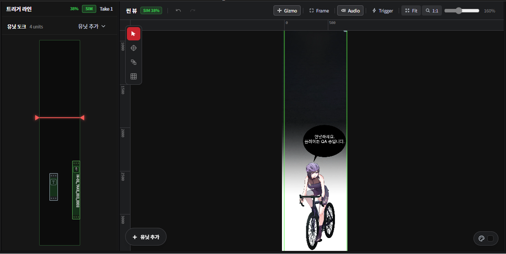
⑤ 씬 뷰 — 가운데 가장 큰 화면
독자가 보게 될 실제 화면을 미리 보면서 꾸미는 무대입니다. 가운데 초록 테두리가 작품 화면 영역(720×1280)입니다.
왼쪽 도구 막대에는 무대에서 요소를 다루는 네 가지 도구가 있습니다(괄호는 단축키).
| 도구 | 역할 |
|---|---|
| Select (Q) | 요소를 선택합니다. |
| Cursor (W) | 요소를 이동·배치합니다. |
| Scale (E) | 요소의 크기를 조절합니다. |
| Mesh (R) | 요소를 그물망처럼 변형합니다. |
위쪽 가로 막대에는 실행 취소(↶)·다시 실행(↷), 보기 옵션, 화면 맞춤·확대 컨트롤이 있습니다. 보기 옵션 네 가지는 화면에 무엇을 함께 보여 줄지 켜고 끄는 스위치입니다.
| 옵션 | 역할 |
|---|---|
| Gizmo | 선택한 요소의 위치·크기 조절 손잡이를 표시합니다. |
| Frame | 작품 화면의 경계(프레임) 테두리를 표시합니다. |
| Audio | 소리 요소를 미리듣기 등으로 함께 다룰 수 있게 합니다. |
| Trigger | 독자의 반응을 받는 지점(트리거)을 화면에 표시합니다. |
화면 맞춤·확대는 Fit(창에 맞춰 전체 보기) · 1:1(실제 크기) 버튼과 확대 슬라이더·배율(%)로 조절합니다.
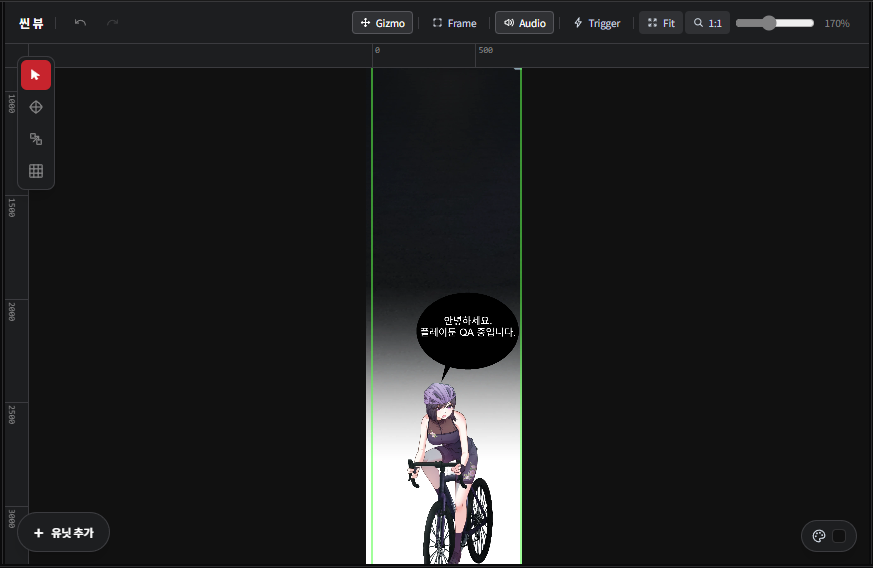
씬 뷰와 인스펙터 사이에는 모니터 패널이 있어, 재생 중인 테이크 상태와 유닛 애니메이션 상태를 확인할 수 있습니다.
⑥ 인스펙터 — 가장 오른쪽 패널
지금 고른 요소의 세부 속성을 편집하는 곳입니다. 무엇을 선택했느냐에 따라 탭과 내용이 달라집니다. 아무것도 고르지 않으면 "유닛을 선택하면 속성을 편집할 수 있습니다"라고 안내됩니다.
| 선택 대상 | 탭 | 주요 내용 |
|---|---|---|
| 유닛(이미지·텍스트 등) | 속성 · 클립 · 설정 | 속성: Trigger·Source·Transform·Color·Depth·Tween·Mask / 클립: enter·idle·exit 타임라인 |
| 테이크 | 속성 · 설정 | 일반(높이·배경)·인터랙티브(시퀀스 편집·분기 편집)·유료·BGM·오디오 마스터 |
설정 탭은 무엇을 선택하든 프로젝트 전역 설정을 보여 줍니다 — Template(이름·크기·배경), Animation(Default Curve), Platform(연결·프로젝트명·ID), Audio. 인터랙션을 만드는 시퀀스 편집·분기 편집은 테이크를 골랐을 때 인터랙티브 항목에 있습니다(6장에서 다룸).
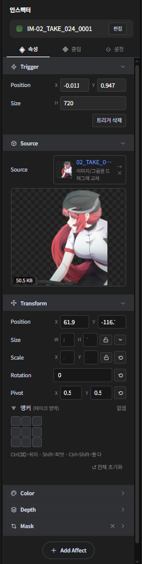
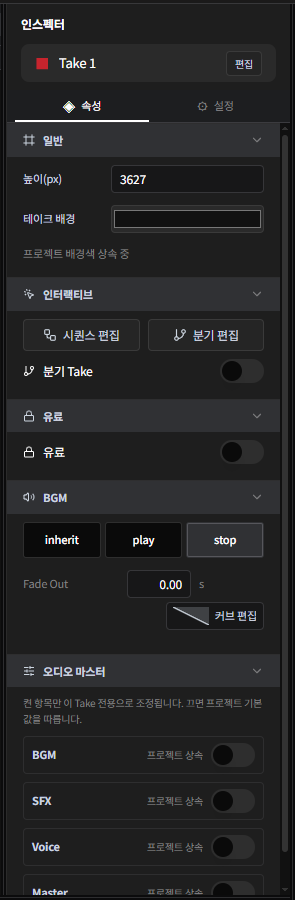
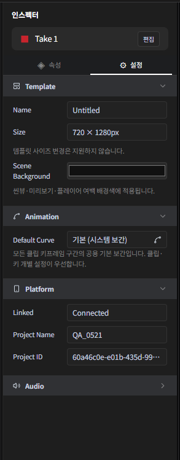
⑦ 타임라인 — 맨 아래 가로 영역
시간 흐름에 따라 움직임을 배치하는 시간표입니다. 위쪽에 재생·반복(Loop)·속도 조절이, 아래쪽 TRACKS 영역에 시간 눈금(0:00, 1:00 …)이 있습니다. 유닛을 골라야 내용이 채워지며, 5장(움직임 만들기)의 주 무대입니다.
※ 화면 속 메뉴 명칭(영문·한글 표기)은 현재 개발 중이며 이후 변경될 수 있습니다. 이 설명서는 v0.6.0 RC.7 화면을 기준으로 작성되었습니다.
3장첫 장면 만들기
새 프로젝트에는 이미 무대가 준비되어 있습니다. 그림 파일 한 장을 가져와 화면에 띄워 보고, 다음 장면까지 이어 봅니다.
작품의 구조: 테이크와 패널
본격적으로 만들기 전에 세 단어만 익히면 됩니다.
| 용어 | 쉬운 뜻 |
|---|---|
| 테이크(Take) | 하나의 살아 있는 장면. 영화에서 한 장면을 ‘테이크’라 부르듯, 역동적으로 움직이는 한 장면의 단위입니다. 독자는 스크롤로 테이크를 차례로 넘기며 이야기를 봅니다. 새 프로젝트에는 Take 1이 자동으로 하나 만들어져 있습니다. |
| 패널(Panel) | 장면의 내용이 담기는 틀. 테이크를 만들면 그 안에 패널이 기본으로 하나 자동 생성됩니다. 웹툰의 컷 칸처럼, 그림과 움직임이 이 틀 안에 담깁니다. 작가의 연출 의도에 따라 한 테이크에 패널을 둘 이상 두어 한 장면 안에서 여러 컷을 함께 연출할 수도 있습니다. |
| 유닛(Unit) | 장면에 등장하는 개별 요소를 통틀어 부르는 말. 패널도, 뒤에서 올릴 이미지도 유닛의 한 종류입니다. |
이미 준비된 무대 — 패널 선택해 보기
새 프로젝트를 열면 계층(하이라키) 창에 Take 1과 그 안의 Panel이 이미 만들어져 있습니다. 따로 만들 것 없이 바로 작업을 시작하면 됩니다. 먼저 계층에서 패널을 클릭해 보세요. 화면의 세 곳이 함께 반응합니다.
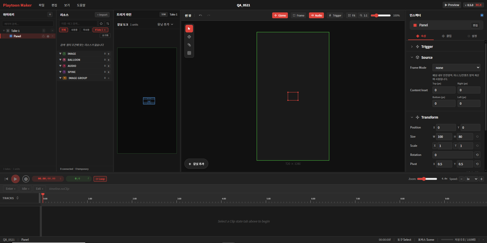
- 씬 뷰에 패널을 나타내는 박스가 표시됩니다(기본 크기 100×80).
- 인스펙터에 속성이 채워집니다 — Source(화면 영역 설정), Transform(위치·크기·회전 등).
- 타임라인 왼쪽에 Enter · Idle · Exit 세 개의 상태 탭이 나타납니다.
이 ‘선택하면 세 곳이 반응하는’ 패턴은 앞으로 어떤 유닛을 골라도 똑같습니다. 무엇이든 계층에서 선택 → 인스펙터에서 속성 확인 → 타임라인에서 움직임의 흐름으로 다룹니다.
첫 그림 가져오기
이제 이 무대에 올릴 그림을 가져옵니다. 준비물은 내 컴퓨터에 있는 그림 파일(PNG·JPG 등) 아무거나 한 장이면 충분합니다.
- 리소스 패널 위쪽의 ＋ Import 버튼을 누릅니다. 리소스 임포트 창이 열립니다.
- 카테고리에서 Image를 선택합니다.
- 창 가운데 영역에 그림 파일을 끌어다 놓습니다(또는 ⬆ 파일 추가를 눌러 고릅니다).
- 오른쪽 아래 임포트 시작을 누릅니다. 잠시 뒤 리소스 패널의 IMAGE 칸에 그림이 등록됩니다.
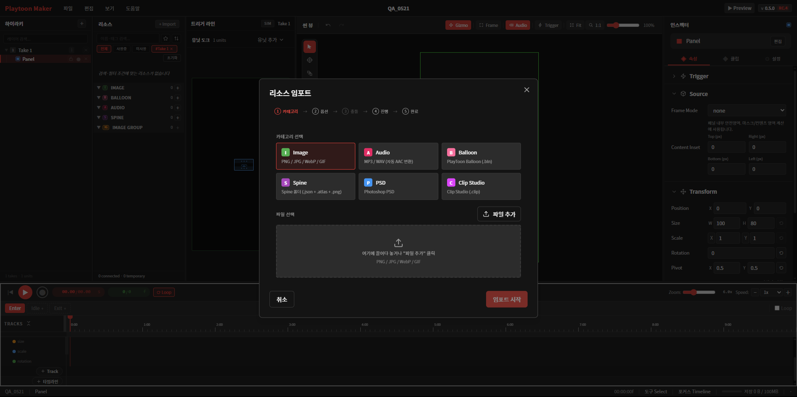
패널 위에 그림 띄우기
가져온 그림을 무대에 올립니다.
- 리소스 패널 IMAGE 칸의 그림을 드래그해서 계층(하이라키) 창에 놓습니다.
- 계층에 이미지 레이어가 생기고, 씬 뷰 무대에 그림이 나타납니다.
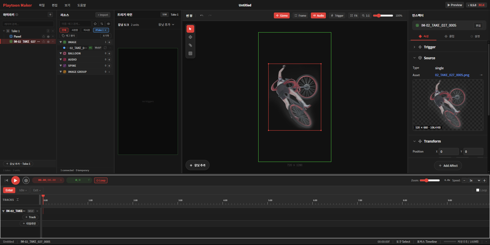
대사 넣기 — 텍스트 유닛
그림 옆에 대사나 자막을 넣으려면 텍스트 유닛을 만듭니다.
- 계층(하이라키) 창 하단의 ＋ 유닛 추가 · Take 1 버튼을 누릅니다.
- 메뉴에서 Text를 선택하면 계층에 텍스트 유닛이 생기고, 씬 뷰에 글자가 나타납니다.
- 텍스트 유닛을 선택한 뒤, 인스펙터의 Source에서 문구(Content)와 글꼴(Font)·크기(Size)·색(Color)·여백(Padding)·정렬(Align)을 지정합니다.
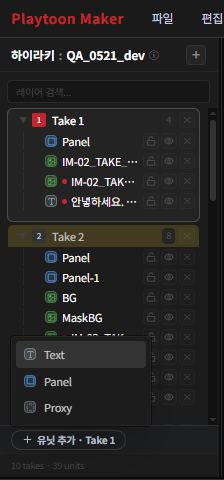
| 메뉴 | 만드는 것 |
|---|---|
| Text | 대사·자막용 텍스트 유닛 |
| Panel | 패널 추가 — 한 테이크 안에 컷(틀)을 하나 더 둘 때 |
| Proxy | 특수 용도의 유닛(상세는 추후 보강) |
위치와 크기 정하기 — Transform
계층에서 방금 만든 유닛(이미지 레이어든 텍스트든)을 선택하고, 인스펙터의 Transform 항목에서 자리를 잡습니다.
| 속성 | 뜻 |
|---|---|
| Position | 화면에서의 위치(X·Y) |
| Size | 가로(W)·세로(H) 크기 |
| Scale | 배율(1이 기본, 2면 두 배) |
| Rotation | 회전 각도 |
| Pivot | 회전·크기 변화의 기준점(0.5·0.5가 중심) |
패널의 화면 영역 설정 — Source
패널을 고르면 인스펙터에 Source 항목이 보입니다. 패널이 차지하는 화면 영역과 그 안쪽 여백을 정하는 곳으로, 다음 두 가지만 알면 충분합니다.
| 항목 | 뜻 |
|---|---|
| Frame Mode | 패널의 화면 영역을 어떤 기준으로 잡을지 정하는 방식입니다. 기본값 none은 특별한 기준 없이 그대로 두는 상태입니다. |
| Content Inset | 패널 안쪽의 안전 여백(위·아래·왼쪽·오른쪽, 단위 px)입니다. 내용이 가장자리에 붙지 않도록 여백을 줍니다. |
다음 장면 만들기 — 새 테이크 추가
한 장면을 다 꾸몄다면, 다음 장면은 새 테이크로 만듭니다. 계층 패널 오른쪽 위의 ＋ 버튼을 누르면 Take 2가 생기고, 그 안에 패널이 다시 기본으로 하나 들어 있습니다. 이렇게 테이크를 쌓아 가면 독자가 스크롤로 넘기는 장면들이 차례로 이어집니다.
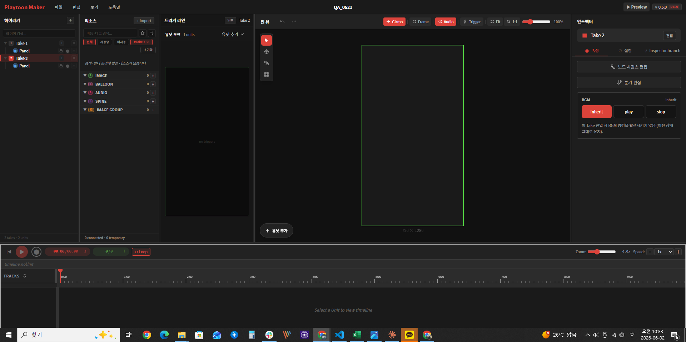
Take 2 — 그 아래 패널이 자동으로 함께 생성됨4장리소스 채우기
3장에서 그림 한 장을 가져와 화면에 띄워 봤습니다. 이 장에서는 가져오기의 전체 기능을 다룹니다 — 애니메이션에 쓸 그림·소리·캐릭터 같은 재료(리소스)를 종류별로 채우는 법입니다.
재료를 준비하는 경로는 크게 두 가지이고, 어느 쪽이든 결과는 같습니다 — 리소스 패널에 등록되고, 5장에서 똑같이 무대에 올려 움직이게 만듭니다.
| 경로 | 이런 경우에 |
|---|---|
| A. 일반 이미지 직접 넣기 | PNG·JPG 같은 낱장 그림 파일이 있을 때. 3장에서 해 본 방법 그대로이며, 여러 장을 한 번에 끌어다 놓을 수도 있습니다. 준비된 작화 파일이 없어도 이 경로만으로 작품을 만들 수 있습니다. |
| B. 작화 파일 통째로 가져오기 | PSD·Clip Studio로 작업한 파일이 있을 때. 파일 속 레이어를 골라 한꺼번에 가져옵니다(아래 상세). |
어떤 재료를 올릴 수 있나
패널에 생명을 불어넣으려면 먼저 재료가 필요합니다. 플레이툰 메이커는 여섯 가지 종류의 파일을 받아들입니다.
| 종류 | 받는 파일 형식 | 쓰임 |
|---|---|---|
| Image | PNG · JPG · WebP · GIF | 배경·사물 등 일반 이미지 |
| Audio | MP3 · WAV (자동 AAC 변환) | 효과음·배경음악 등 소리 |
| Balloon | PlayToon Balloon (.bln) | 플레이툰 전용 말풍선 |
| Spine | Spine 폴더 (.json + .atlas + .png) | 관절이 움직이는 캐릭터 애니메이션 |
| PSD | Photoshop PSD | 포토샵 작화 파일 |
| Clip Studio | Clip Studio (.clip) | 클립스튜디오 작화 파일 |
.bln 형식을 사용하고, 소리(Audio)는 올릴 때 자동으로 AAC로 변환됩니다.리소스 임포트 창 열기
재료를 가져오는 창은 두 가지 방법으로 열 수 있습니다.
- 리소스 패널 위쪽의 ＋ Import 버튼을 누릅니다. (모든 종류를 고를 수 있는 상태로 열립니다.)
- 또는 리소스 패널의 각 칸(IMAGE · BALLOON · AUDIO · SPINE 등) 오른쪽 ＋ 버튼을 누릅니다. (그 종류가 선택된 채로 열립니다.)
임포트 창의 모습은 3장의 그림 3-2를 참고하세요.
가져오기 5단계
임포트 창은 위쪽에 표시된 다섯 단계를 차례로 거칩니다. 대부분은 메이커가 자동으로 처리하므로, 사용자는 재료를 고르고 시작만 누르면 됩니다.
| 단계 | 하는 일 |
|---|---|
| ① 카테고리 | 가져올 재료 종류(Image·Audio·Balloon·Spine·PSD·Clip Studio)를 고릅니다. |
| ② 옵션 | 가져오기 세부 옵션을 정합니다. PSD·Clip Studio처럼 여러 레이어가 든 파일은 이 단계에서 어떤 레이어를 가져올지 고릅니다(아래 설명). |
| ③ 충돌 | 가져오려는 이미지가 이미 등록된 리소스와 같을 때(중복) 처리 방법을 정합니다(아래 설명). |
| ④ 진행 | 가져오기가 진행됩니다. |
| ⑤ 완료 | 가져오기가 끝나고 재료가 리소스 패널에 추가됩니다. |
파일을 고르는 방법은 두 가지입니다. 창 가운데 영역에 내 컴퓨터의 파일을 끌어다 놓거나, ⬆ 파일 추가 버튼을 눌러 고릅니다. 여러 파일을 한 번에 가져올 수 있습니다. 다 고른 뒤 오른쪽 아래 임포트 시작을 누르면 가져오기가 실행됩니다.
가져온 재료는 종류에 따라 리소스 패널의 해당 칸에 자동으로 정리됩니다. 이렇게 채운 재료를 씬 뷰(무대)로 끌어다 놓아 화면을 구성하게 됩니다.
경로 A — 일반 이미지 여러 장 넣기
3장에서 해 본 방법 그대로입니다. 카테고리에서 Image를 고르고, 배경·캐릭터·소품 등 낱장 그림 파일들을 창 가운데에 여러 장 한꺼번에 끌어다 놓은 뒤 임포트 시작을 누르면 됩니다. 등록된 그림은 모두 IMAGE 칸에 정리되고, 계층 창으로 드래그해 무대에 올립니다(3장 ‘패널 위에 그림 띄우기’와 동일).
경로 B — PSD · Clip Studio 레이어 골라 가져오기
PSD나 Clip Studio 파일은 그림이 여러 레이어로 나뉘어 있습니다. 가져오기 옵션 단계에서는 파일 안의 레이어 목록을 보여 주고, 작업에 필요한 레이어만 골라 가져올 수 있습니다. 가진 작화 파일이 없다면, 이 문서 표지에서 내려받은 psd 예시 파일로 아래 과정을 그대로 따라 해 볼 수 있습니다.
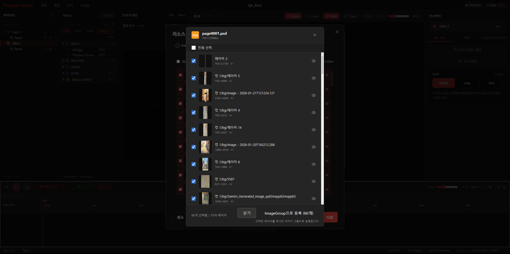
- 각 레이어 왼쪽 체크박스로 가져올지 말지를 정합니다. 맨 위 전체 선택으로 한 번에 켜고 끌 수 있습니다.
- 레이어 오른쪽 눈 아이콘으로 미리보기를 켜고 끌 수 있습니다.
- 필요 없는 레이어(빈 레이어, 메모용 레이어 등)는 체크를 꺼서 빼고 가져올 수 있습니다.
- 아래쪽 ImageGroup으로 등록을 누르면 선택한 레이어들이 하나의 이미지 그룹으로 묶여 등록됩니다(리소스 패널의 IMAGE GROUP 칸).
중복 이미지 처리 — 충돌 단계
가져오려는 이미지가 이미 등록된 리소스와 똑같은 이미지일 때 ‘충돌’이 발생합니다. 이때 두 가지로 처리할 수 있습니다.
- 제외하기 — 중복된 이미지는 가져오지 않고 기존 것을 그대로 사용합니다(불필요한 중복 방지).
- 그대로 쓰기 — 중복이어도 가져오면, 기존 것과 구분할 수 있도록 태그가 자동으로 생성되어 붙습니다.
5장움직임 만들기
유닛이 화면에 등장하고, 머물고, 사라지는 동안 어떻게 움직일지를 시간표(타임라인)에 그려 넣습니다. 플레이툰 메이커 연출의 핵심입니다.
움직이기 전 준비 — 무대 확인
움직임은 무대(계층)에 올라온 레이어에만 줄 수 있습니다. 3장에서 이미 해 봤듯이, 리소스 패널의 이미지를 계층 창에 드래그하면 레이어가 생기고 씬 뷰에 나타납니다(그림 3-3). 아직 무대가 비어 있다면 3장 ‘패널 위에 그림 띄우기’를 먼저 진행하세요.
편집은 화면 아래쪽 타임 에디터(타임라인)에서 합니다. 계층에서 레이어를 선택하고 상태 탭(Enter 등)을 누르면, 그 유닛의 타임라인이 트랙 영역에 SELF로 자동으로 올라와 바로 채널(트랙)을 만들 수 있는 상태가 됩니다. 여기서부터가 이 장의 내용입니다.
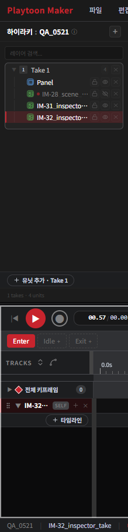
세 가지 상태: 등장 · 유지 · 퇴장
모든 유닛은 세 개의 ‘상태’를 가집니다. 타임라인 왼쪽 위의 탭으로 전환합니다.
| 상태 탭 | 의미 | 예시 |
|---|---|---|
| Enter (등장) | 유닛이 화면에 처음 나타나는 순간의 연출 | 아래에서 위로 떠오르며 등장 |
| Idle (유지) | 화면에 머무는 동안 반복되는 연출 | 제자리에서 살짝 흔들림 |
| Exit (퇴장) | 유닛이 화면에서 사라질 때의 연출 | 투명해지며 사라짐 |
그렇다면 이 연출은 언제 재생될까요? 열쇠는 2장에서 본 트리거 라인의 빨간 지시선입니다. 독자가 스크롤을 내려 빨간 지시선(현재 스크롤 위치)이 유닛에 닿으면 그 유닛의 Enter가 시작되고, 머무는 동안 Idle이 이어지며, 유닛을 벗어날 때 Exit이 재생됩니다. 즉 여기서 만드는 움직임은 ‘독자의 스크롤이 도달하는 순간’ 실행됩니다.
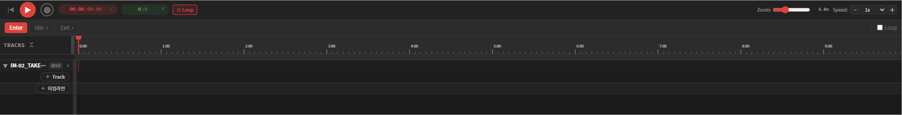
상태 탭(예: Enter)을 누르면 타임라인 왼쪽에 해당 유닛의 트랙 영역이 열리고, ＋ Track(트랙 추가)과 ＋ 타임라인 버튼이 나타납니다. 두 버튼의 역할은 다릅니다.
| 버튼 | 하는 일 |
|---|---|
| ＋ Track | 지금 선택한 유닛에 움직임 종류(트랙)를 추가합니다(아래 ‘트랙 추가하기’ 참조). |
| ＋ 타임라인 | 선택한 유닛(SELF)은 자동으로 올라와 있으므로, 다른 유닛의 타임라인을 함께 올릴 때 사용합니다. 유닛 목록에서 골라 나란히 추가하면 여러 유닛의 움직임 타이밍을 한 화면에서 맞출 수 있습니다. |
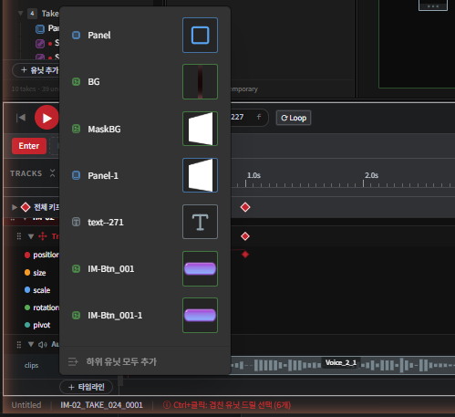
트랙 추가하기
‘트랙’은 한 가지 움직임을 담는 줄입니다. ＋ Track을 누르면 추가할 움직임 종류를 고를 수 있습니다.
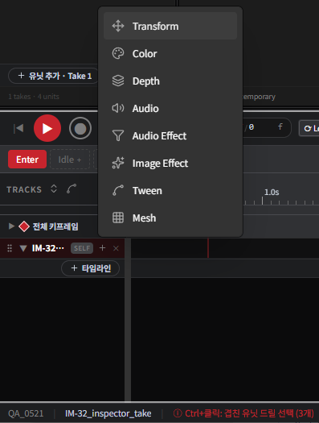
| 트랙 종류 | 다루는 움직임 |
|---|---|
| Transform | 위치·크기·회전 등 형태 변화 (가장 기본) |
| Color | 색상·투명도 변화 |
| Depth | 앞뒤 순서(겹침) 변화 |
| Audio | 소리 재생 |
| Audio Effect | 소리에 적용하는 효과 |
| Image Effect | 흐림·발광 같은 이미지 효과 |
| Tween | 두 값 사이를 부드럽게 이어 주는 보간 |
| Mesh | 이미지를 그물망처럼 변형해 휘거나 출렁이게 하는 효과 |
예시: Transform 트랙
가장 자주 쓰는 Transform을 골라 보겠습니다. 추가하면 타임라인에 색으로 구분된 속성 줄이 펼쳐집니다.
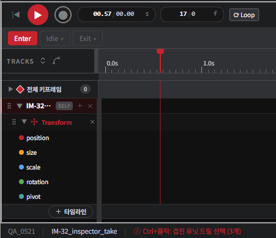
각 속성 줄(position·size·scale·rotation·pivot)의 시간축 위에 값을 지정해 두면, 그 사이를 메이커가 자연스럽게 이어 움직임을 만듭니다. 예를 들어 시작 시점 크기를 작게, 잠시 뒤 크기를 크게 지정하면 ‘점점 커지며 등장’하는 연출이 됩니다.
값 지정하기 — 키프레임
움직임은 키프레임(◆)으로 만듭니다. 키프레임은 ‘몇 번째 프레임에서 이 속성이 어떤 값이어야 하는지’를 표시한 점입니다. 서로 다른 두 지점에 값을 다르게 찍으면, 그 사이는 메이커가 자동으로 이어 부드러운 움직임이 됩니다.
- 움직이고 싶은 속성 줄(예:
position)에서 원하는 시간 위치를 마우스로 클릭합니다. 그 자리에 키프레임 — 다이아몬드(◆) 표시가 생깁니다. - 생긴 ◆를 다시 클릭하면 세부 조정 창(편집창)이 열립니다. frame(프레임 번호)과 value(값, 예: position은 x·y)를 지정합니다.
- 다른 시간 위치에 키프레임을 하나 더 찍고 값을 다르게 주면, 두 값 사이가 이어지며 움직임이 만들어집니다.
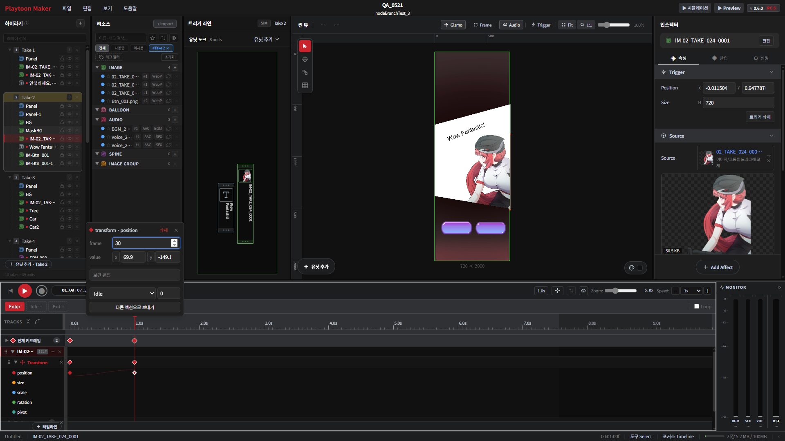
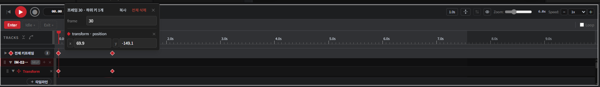
키프레임 편집창의 주요 항목은 다음과 같습니다.
| 항목 | 하는 일 |
|---|---|
| frame · value | 키프레임의 시간 위치(프레임)와 값을 지정합니다. |
| 보간 편집 | 이 키와 다음 키 사이의 변화 곡선을 다듬습니다(아래 ‘보간(커브) 편집’ 참조). |
| 다른 액션으로 보내기 | 선택한 키프레임을 다음 상태(액션)로 옮깁니다. Enter에서 실행하면 Idle로, Idle에서 실행하면 Exit로 이동합니다. 연출을 만들다가 “이 동작은 등장이 아니라 유지 단계에 있어야겠다” 싶을 때 다시 찍을 필요 없이 옮길 수 있습니다. |
따라 해 보기 — 아래에서 떠오르며 등장
배운 것을 그대로 묶어, 3장에서 올린 이미지에 첫 연출을 만들어 봅니다. 키프레임 두 개면 충분합니다.
- 계층에서 이미지 레이어를 선택하고 Enter 탭을 누릅니다(SELF 타임라인 등장).
- ＋ Track → Transform을 추가합니다.
position줄의 frame 0 위치를 클릭해 ◆를 만들고, 다시 클릭해 편집창에서 y 값을 도착 위치보다 200 정도 아래로 지정합니다. (값을 바꿔 보며 씬 뷰에서 이미지가 화면 아래쪽에 내려가 있으면 맞습니다.)- frame 30(약 1초) 위치를 클릭해 두 번째 ◆를 만들고, y 값을 원래(도착) 위치로 지정합니다.
- 타임라인 왼쪽 위 ▶ 재생 — 이미지가 아래에서 떠오르며 등장합니다.
움직임의 속도감 조절 — 보간(커브) 편집
키프레임이 ‘언제 어떤 값’을 정한다면, 보간은 그 사이를 어떤 속도감으로 변할지 정합니다. 같은 두 값 사이라도 등속으로 움직일지, 천천히 시작해 빨라질지, 부드럽게 도착할지에 따라 느낌이 크게 달라집니다.
키프레임 편집창의 보간 편집(또는 구간 커브 편집)을 누르면 두 키 사이의 변화 곡선을 다듬는 창이 열립니다. 위쪽의 이징 프리셋(Linear·Sine·Quad·Cubic·Expo 등)을 고르면 곡선이 곧바로 적용되고, 아래 그래프에서 곡선을 직접 손볼 수도 있습니다.
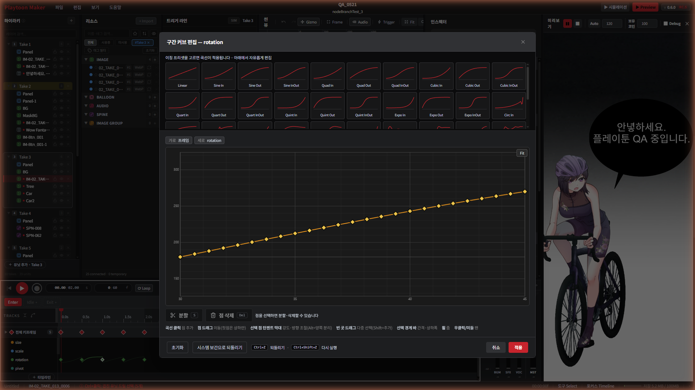
6장인터랙션 만들기
독자의 터치·선택에 이야기가 반응하게 만듭니다. 클릭하면 다음 장면으로 넘어가거나, 선택에 따라 이야기가 갈라지는 연출을 ‘노드’로 짭니다. 플레이툰을 ‘함께 노는 이야기’로 만드는 단계입니다.
인터랙션은 테이크 단위로 설계합니다
인터랙션은 테이크에 붙습니다. 계층에서 테이크를 고른 뒤, 인스펙터의 인터랙티브 항목에서 시퀀스 편집을 누르면 노드 편집 창이 열립니다. (그 옆 분기 편집·분기 Take·유료는 분기·과금 관련 설정입니다.)
노드 편집 창 둘러보기
시퀀스 편집을 누르면 노드 시퀀스 창이 열립니다(제목에 대상 테이크가 표시됩니다). 노드는 ‘하나의 동작 블록’이고, 이 블록들을 선으로 이어 “이런 일이 생기면 → 이렇게 반응한다”는 흐름을 만듭니다.
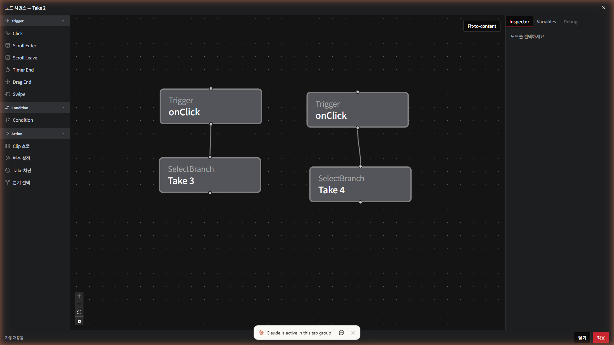
- 왼쪽 — 추가할 수 있는 노드 목록(아래 표 참고).
- 가운데 — 노드를 배치하고, 한 노드의 연결점에서 다른 노드로 드래그해 선을 이어 흐름을 만드는 캔버스. 오른쪽 위 Fit-to-content로 전체 보기를 맞출 수 있습니다.
- 오른쪽 — Inspector(고른 노드의 세부 설정) · Variables(변수) · Debug 탭.
- 아래 — 작업은 자동 저장되며, 다 되면 적용, 그만두려면 닫기.
노드의 세 종류
노드는 성격에 따라 세 묶음으로 나뉩니다. 대개 트리거(계기) → (조건) → 액션(반응) 순으로 잇습니다.
| 묶음 | 노드 | 의미 |
|---|---|---|
| Trigger (계기) | Click | 독자가 눌렀을 때 |
| Scroll Enter | 스크롤로 이 지점에 들어왔을 때 | |
| Scroll Leave | 스크롤로 이 지점을 벗어났을 때 | |
| Timer End | 정해진 시간이 끝났을 때 | |
| Drag End | 끌기 동작이 끝났을 때 | |
| Swipe | 쓸어넘기는 동작을 했을 때 | |
| Condition (조건) | Condition | 어떤 조건이 맞을 때만 다음으로 넘어가도록 판단 |
| Action (반응) | Clip 호출 | 특정 움직임(클립)을 실행 |
| 변수 설정 | 값을 저장·변경(예: 선택 기록) | |
| Take 차단 | 특정 테이크로의 진행을 막음 | |
| 분기 선택 | 다음에 보여 줄 테이크를 고름(이야기 갈라짐) |
준비물 — 클릭받을 버튼 만들기
클릭 트리거를 쓰려면 먼저 클릭을 받을 버튼이 무대에 있어야 합니다. 별도의 버튼 유닛이 있는 것이 아니라, 이미지 유닛에 버튼 기능을 붙이는 방식입니다.
- 버튼으로 쓸 이미지를 무대에 올리고(3장 방법), 계층에서 선택합니다.
- 인스펙터 맨 아래의 ＋ Add Affect 버튼을 누릅니다.
- 메뉴에서 Button을 선택합니다. 이제 이 유닛이 클릭을 받는 버튼이 됩니다.
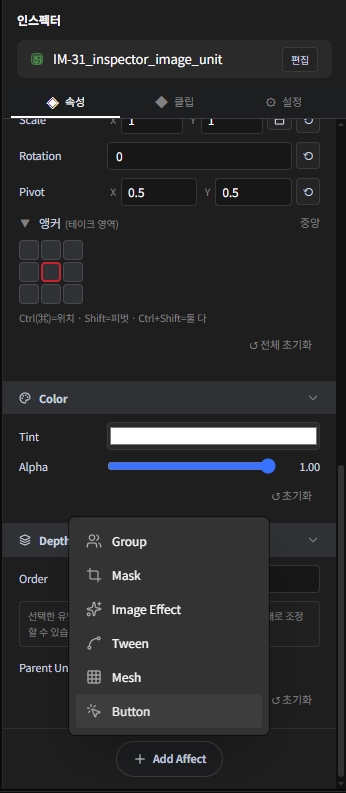
Button을 추가하면 인스펙터에 Button 섹션이 생깁니다. 여기서 버튼의 이름과 겉모습 반응을 정합니다.
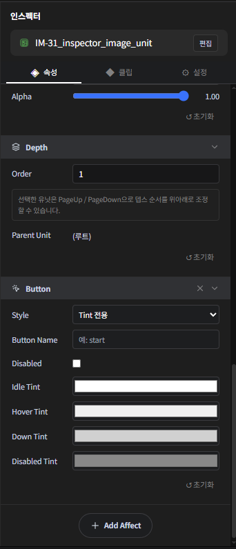
| 항목 | 뜻 |
|---|---|
| Style | 버튼 반응 표현 방식(예: Tint 전용 — 색 변화로 반응) |
| Button Name | 이 버튼의 이름(예: start). 노드 창 onClick의 button_name에 지정하는 이름이 바로 이것입니다. |
| Disabled | 체크하면 버튼을 비활성화합니다. |
| Idle · Hover · Down · Disabled Tint | 평소 · 마우스 올림 · 누름 · 비활성 상태일 때의 색. 독자의 조작에 버튼이 색으로 반응합니다. |
예시: 클릭하면 다른 장면으로 갈라지기
그림 6-1의 캔버스에는 선택지 분기가 만들어져 있습니다. 두 개의 Trigger: onClick이 각각 SelectBranch: Take 3·SelectBranch: Take 4로 이어져 있는데, 이는 “어느 버튼을 클릭하느냐에 따라 Take 3 또는 Take 4로 이야기가 갈라진다”는 뜻입니다. 만드는 순서는 이렇습니다.
- 왼쪽에서 Trigger → Click 노드를 캔버스에 추가합니다(‘클릭하면’이라는 계기).
- 왼쪽에서 Action → 분기 선택 노드를 추가하고, Inspector의
targetTakeName에서 이동할 테이크(예: Take 3)를 지정합니다. - Click 노드 아래점에서 분기 선택 노드로 드래그해서 선을 이어 연결합니다.
- 선택지가 둘이라면 같은 방식으로 한 쌍을 더 만들어 다른 테이크(예: Take 4)로 잇습니다.
- 오른쪽 Inspector에서 각 노드의 세부(대상 버튼·이동 테이크 등)를 확인·수정합니다.
노드 세부 설정 — Inspector
노드를 클릭하면 오른쪽 Inspector에 그 노드의 세부 설정이 나타납니다. 예를 들어 Trigger: onClick을 고르면 다음을 정할 수 있습니다.
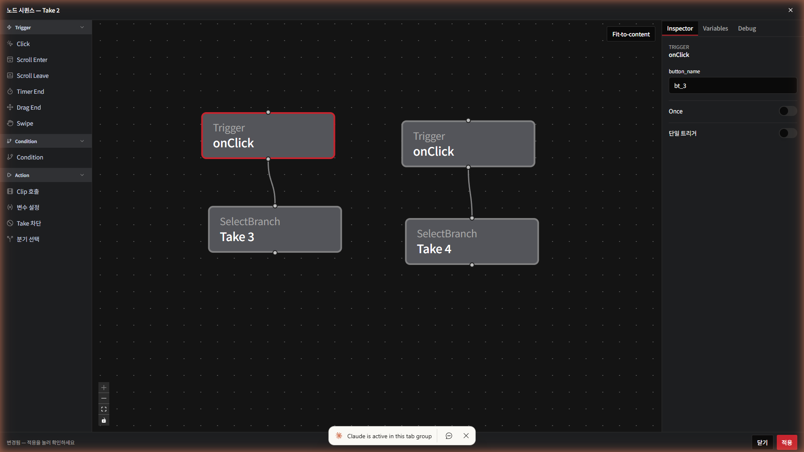
| 항목 | 뜻 |
|---|---|
| button_name | 어느 버튼을 눌렀을 때 발동할지, 대상 버튼의 이름을 지정합니다(예: bt_3). 버튼의 Button 섹션에서 입력한 Button Name과 같아야 합니다. |
| Once | 켜면 이 트리거가 한 번만 작동합니다. |
| 단일 트리거 | 켜면 동시에 여러 번 발동되지 않도록 하나의 트리거로만 처리합니다. |
설정한 값은 캔버스의 노드 카드 본문에도 표시됩니다(예: Once를 켜면 카드에 ‘Once’가 표시). 그래서 창을 닫지 않고도 각 노드가 어떻게 설정됐는지 한눈에 알 수 있습니다.
액션 노드도 마찬가지로 Inspector에서 세부를 정합니다. 분기 선택(SelectBranch) 노드를 고르면 targetTakeName 항목이 나오는데, 여기서 이동할 목표 테이크를 드롭다운으로 고릅니다(예: Take 3).
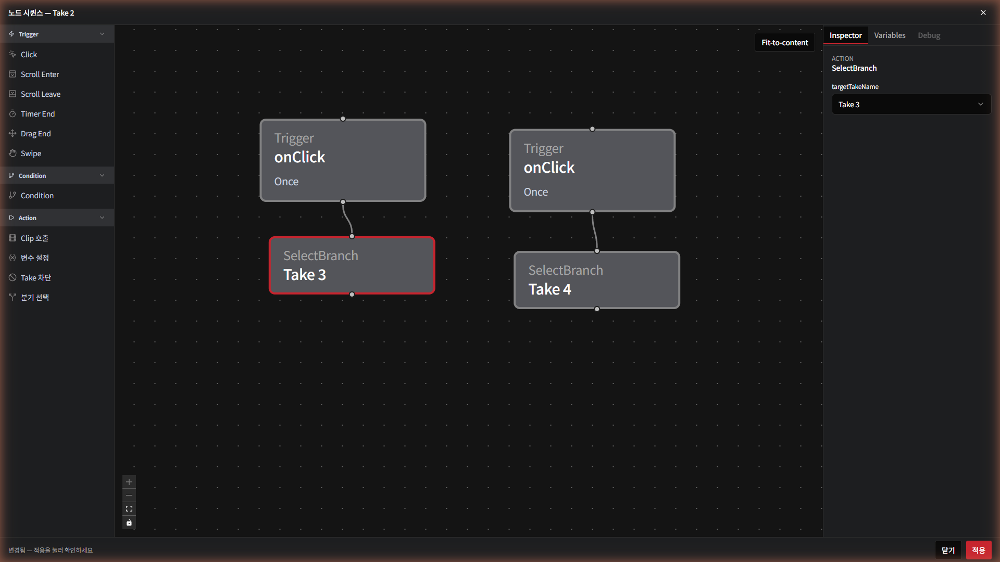
targetTakeName으로 이동할 테이크를 지정. Once가 켜진 트리거 카드에는 ‘Once’가 표시됨값 기억하기 — Variables(변수)
독자의 선택이나 진행 상태를 기억해 두려면 변수를 씁니다. 오른쪽 Variables 탭에서 만듭니다.
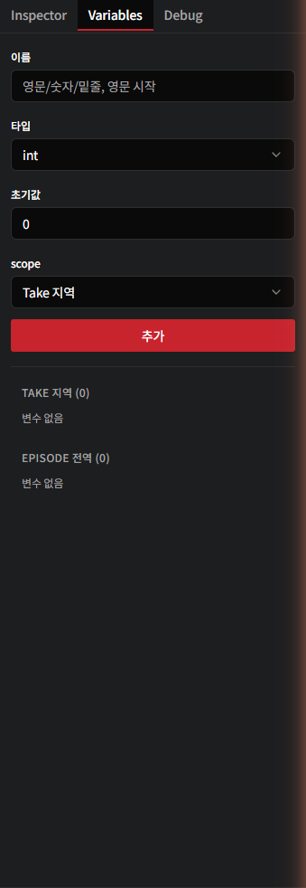
| 항목 | 뜻 |
|---|---|
| 이름 | 변수 이름(영문/숫자/밑줄, 영문으로 시작). |
| 타입 | 값의 종류(정수 int 등). |
| 초기값 | 처음 시작할 때의 값. |
| scope | 변수가 유효한 범위. Take 지역(그 테이크 안에서만) 또는 EPISODE 전역(작품 전체에서). |
트리거 값 시험하기 — Debug(드라이런)
오른쪽 Debug 탭은 노드 에디터 안에서 트리거가 어떤 입력에 어떻게 반응하는지 시험하는 샘플 창입니다. 탭 안의 작은 영역(‘여기서 클릭/드래그’)에서 직접 조작해 보면, 그 입력의 실제 측정값이 표시됩니다.
| 표시 값 | 뜻 |
|---|---|
| 이벤트 | 인식된 동작 종류(예: dragRelease = 드래그 후 놓기) |
| direction | 방향(예: right) |
| velocity | 속도(px/s) |
| distance | 이동 거리(px) |
| duration | 걸린 시간(ms) |
맨 아래에는 MATCH / NO MATCH가 표시됩니다. 방금 조작한 입력이 이 테이크의 트리거 조건에 걸리면 MATCH, 걸리지 않으면 NO MATCH입니다. 이를 보며 Swipe·Drag End 트리거의 방향·속도·거리 기준을 카드에 알맞게 조정할 수 있습니다.
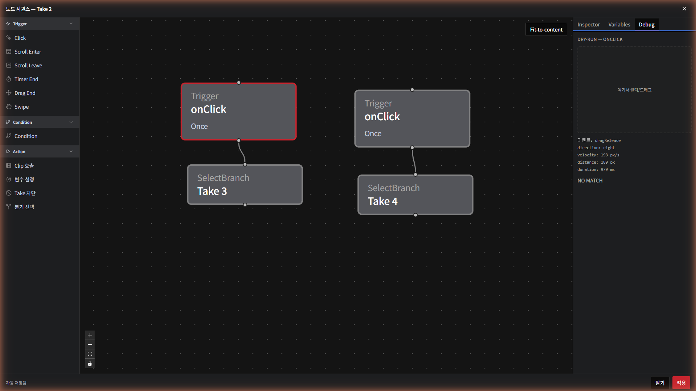
전체 이야기 흐름 보기 — 분기 편집
지금까지의 시퀀스 편집이 한 테이크 안의 반응을 짜는 곳이라면, 분기 편집은 에피소드 전체의 테이크들이 어떻게 이어지고 갈라지는지를 지도처럼 보여 주는 곳입니다. 인스펙터의 분기 편집을 누르면 에피소드 분기 그래프 창이 열립니다.
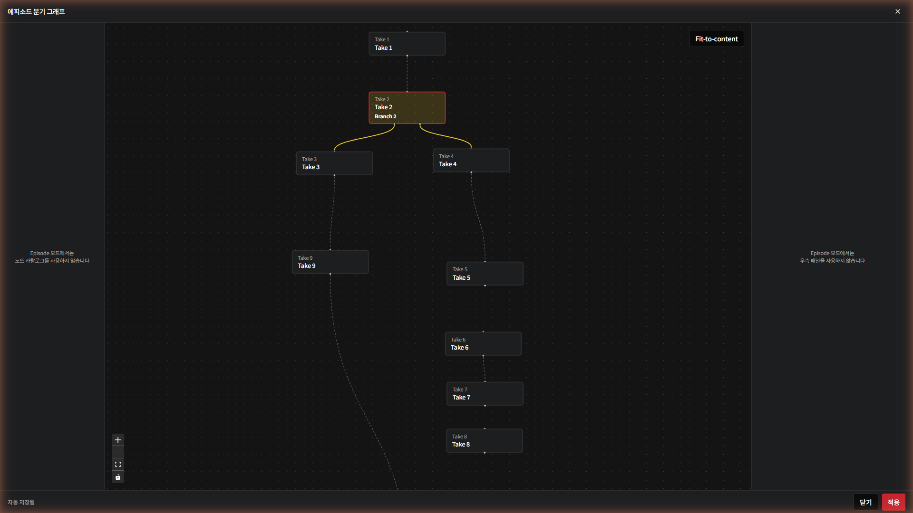
- 각 상자가 하나의 테이크이고, 상자를 잇는 선이 이야기 진행 방향입니다.
- 한 지점에서 여러 갈래로 나뉘는 노란 선이 선택지 분기입니다(예:
Take 2 · Branch 2에서 Take 3과 Take 4로 갈라짐). - 이 창은 에피소드 전체 구조를 조망하면서 테이크 연결을 직접 수정할 수 있는 편집 창입니다. 개별 노드 편집(노드 카탈로그·우측 패널)은 여기서 하지 않고, 세부 반응은 각 테이크의 시퀀스 편집에서 짭니다.
- 작업은 자동 저장되며, 오른쪽 위 Fit-to-content로 전체가 보이도록 맞출 수 있습니다.
7장확인하고 발행하기
완성한 작품을 독자 입장에서 직접 플레이해 확인하고, 문제가 없으면 저장·발행합니다.
독자처럼 플레이해 보기 — 시뮬레이션
상단 가운데의 ▶ 시뮬레이션을 누르면, 플레이어 창이 새로 열리면서 완성된 플레이툰을 실제 독자가 보는 것과 똑같이 실행해 볼 수 있습니다. 스크롤로 테이크를 넘기고, 버튼을 눌러 분기를 선택하는 등 만든 인터랙션을 직접 체험할 수 있습니다.
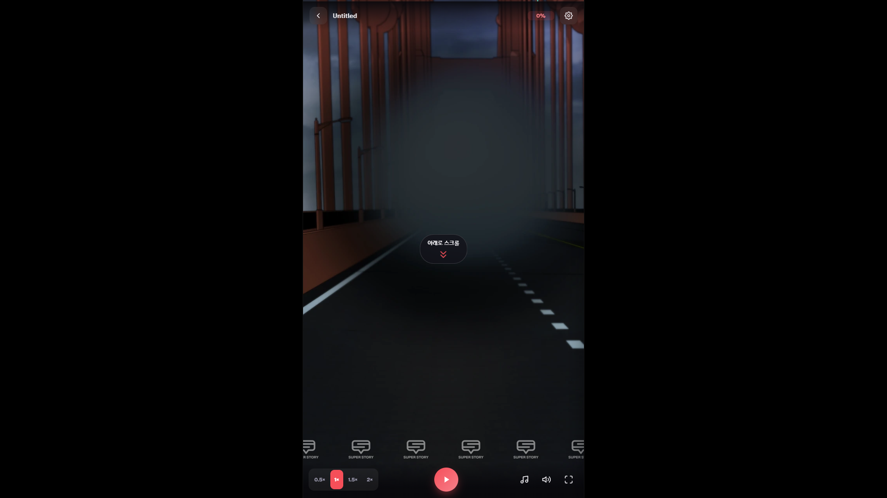
| 위치 | 기능 |
|---|---|
| 상단 | 뒤로가기, 작품명, 진행률(%), 설정(⚙) |
| 가운데 | ‘아래로 스크롤 ⌄’ 안내 — 독자가 스크롤로 다음 장면으로 넘어감 |
| 하단 | 재생 속도(0.5×·1×·1.5×·2×), ▶ 재생, 음악·음량, 전체화면 |
편집하며 바로 보기 — Preview(미리보기)
상단 가운데의 ▶ Preview를 누르면, 별도 창 대신 에디터 오른쪽에 미리보기 패널이 붙어 편집 화면과 나란히 결과를 바로 확인할 수 있습니다. 장면·말풍선·캐릭터가 실제 렌더링된 모습으로 표시되어, 작업하면서 즉시 확인할 때 편리합니다.
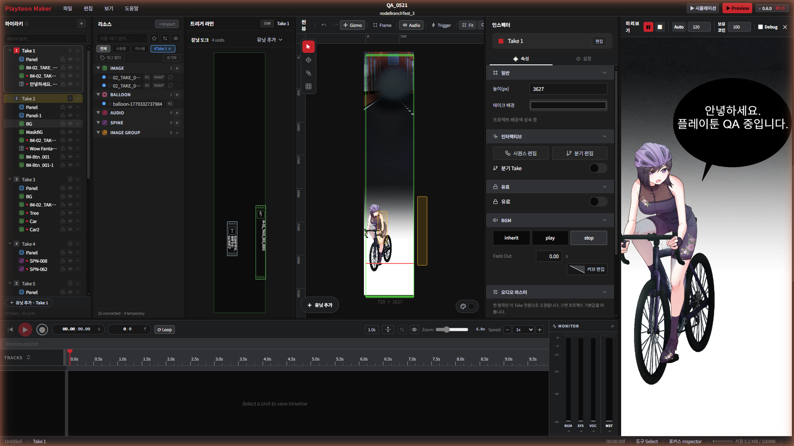
미리보기 패널 위쪽에는 다음 컨트롤이 있습니다.
| 컨트롤 | 기능 |
|---|---|
| ⏸ 일시정지 / ⏹ 정지 | 미리보기 재생을 멈추거나 정지 |
| Auto · 120 | 스크롤 자동 진행(Auto) — 숫자는 진행 속도(px/초). 손대지 않아도 정한 속도로 화면이 내려가며 연출을 확인할 수 있습니다 |
| 보유 코인 · 100 | 유료(코인) 동작을 시험하기 위한 가상 코인 잔량 |
| Debug | 디버그 표시를 켜고 끔 |
| ✕ | 미리보기 패널 닫기 |
테이크 속성 — 인터랙티브 · 유료 · BGM
테이크를 고르면 인스펙터에서 테이크별 속성도 확인·설정할 수 있습니다(그림 2-6 참조).
| 항목 | 내용 |
|---|---|
| 일반 | 테이크 높이(px), 테이크 배경(기본은 프로젝트 배경색 상속) |
| 인터랙티브 | 시퀀스 편집·분기 편집(6장)·분기 Take 설정 |
| 유료 | 이 테이크를 유료로 설정합니다. 독자가 도달하면 진행 카드가 나타나고, 코인이 차감된 뒤 이어서 볼 수 있습니다(아래 참조) |
| BGM | 배경음악 동작(inherit/play/stop), Fade Out, 커브 편집 |
| 오디오 마스터 | 이 테이크 전용 오디오 조정(끄면 프로젝트 기본값 사용) |
유료 테이크는 독자에게 이렇게 보입니다
독자의 스크롤이 유료 테이크에 도달하면 진행 카드가 나타납니다. 카드에는 선택지마다 가격이 표시되고(무료 또는 코인 수), 아래에 보유한 코인 잔량이 함께 보입니다. 유료 선택지를 고르면 보유 코인이 차감되면서 다음으로 진행됩니다. 무료로 설정한 선택지는 차감 없이 그대로 진행됩니다.
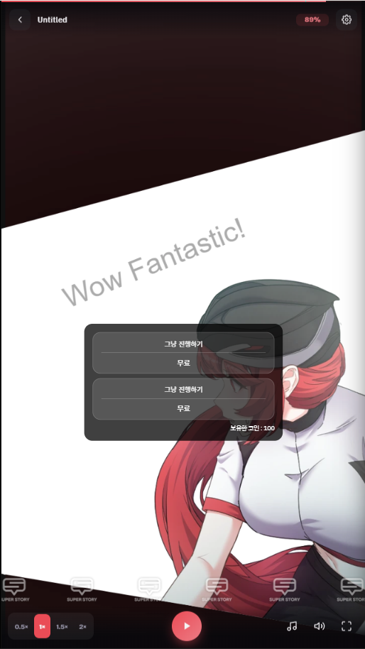
저장하고 발행하기
작업은 자동 저장되지만, 프로젝트를 파일로 보관하거나 작품을 배포하려면 상단 파일 메뉴를 이용합니다.
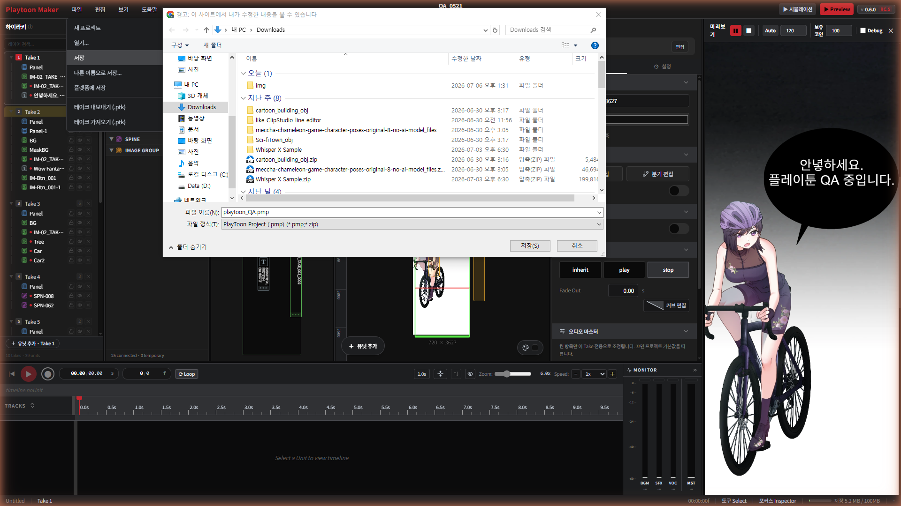
.pmp 형식으로 프로젝트를 저장| 파일 메뉴 항목 | 하는 일 |
|---|---|
| 새 프로젝트 | 새 작품을 시작합니다. |
| 열기 | 저장해 둔 .pmp 프로젝트를 불러옵니다. |
| 저장 / 다른 이름으로 저장 | 프로젝트를 .pmp 파일로 내 컴퓨터에 저장합니다. |
| 플랫폼에 저장 | 작품을 플레이툰 플랫폼에 올립니다(발행). |
| 테이크 내보내기 (.ptk) | 특정 테이크를 .ptk 파일로 따로 내보냅니다. |
| 테이크 가져오기 (.ptk) | 내보낸 .ptk 테이크를 다른 프로젝트로 가져옵니다. |
프로젝트 저장 — 저장을 누르면 저장 위치를 고르는 창이 열립니다. 파일 형식은 PlayToon Project (.pmp)이며, 이 파일이 있으면 나중에 열기로 이어서 작업할 수 있습니다.
작품 발행 — 완성한 작품을 독자에게 공개하려면 플랫폼에 저장을 사용합니다. .pmp는 내 보관·재편집용 파일이고, 플랫폼에 저장은 실제 배포를 위한 것입니다. 누르면 업로드 팝업이 나타나 진행 상황을 보여주고, 완료되면 작품이 플랫폼 서버에 저장됩니다. 어느 플랫폼 프로젝트로 올라가는지는 인스펙터 설정 탭의 Platform 항목(Linked·Project Name·ID)에서 확인할 수 있습니다(그림 2-7 참조).
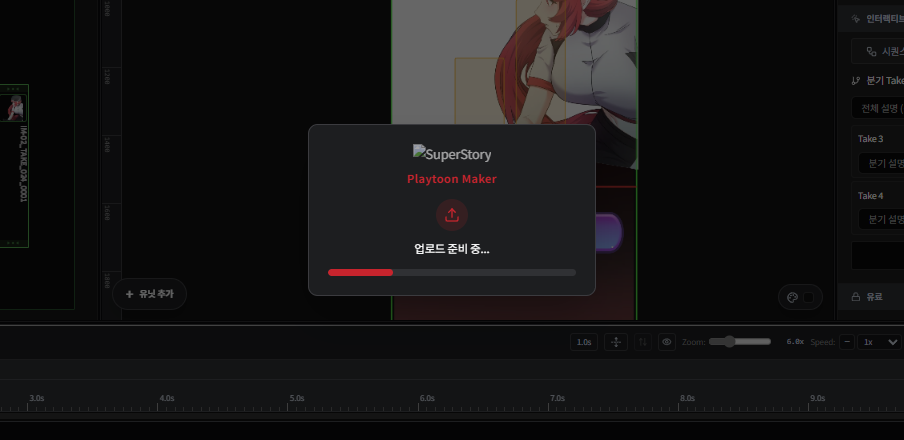
.pmp는 작품 전체 프로젝트 파일이고, .ptk는 테이크 하나를 주고받는 파일입니다. 잘 만든 장면을 다른 작품에서 재사용할 때 .ptk 내보내기/가져오기가 편합니다.8장부록
본문에서 다룬 용어와 기능을 한자리에 모았습니다. 작업 중 빠르게 찾아볼 때 활용하세요.
용어집
| 용어 | 쉬운 뜻 |
|---|---|
| 테이크(Take) | 역동적으로 움직이는 한 장면. 독자가 스크롤로 넘기는 단위. |
| 패널(Panel) | 장면의 내용이 담기는 틀. 테이크마다 기본으로 하나 생성. |
| 유닛(Unit) | 장면에 등장하는 개별 요소(패널도 유닛의 한 종류). |
| 리소스 | 작품에 쓰는 재료(그림·소리·캐릭터 등). |
| 상태(Enter/Idle/Exit) | 유닛이 등장할 때 / 머무는 동안 / 사라질 때의 연출 구분. |
| 트랙(Track) | 한 가지 움직임을 담는 줄(위치·색상·소리 등). |
| 키프레임(◆) | ‘몇 번째 프레임에서 어떤 값’인지 찍는 점. |
| 보간 | 키와 키 사이를 어떤 속도감으로 이을지(등속·가속·감속 등). |
| 트리거(Trigger) | 반응을 일으키는 계기(클릭·스크롤·스와이프 등). |
| 액션(Action) | 계기에 대한 반응(클립 실행·변수 설정·분기 등). |
| 분기(SelectBranch) | 선택에 따라 이야기가 다른 테이크로 갈라지는 것. |
| 변수(Variable) | 독자의 선택·진행 상태를 기억하는 값(Take 지역/에피소드 전역). |
| .pmp | 작품 전체를 담는 프로젝트 저장 파일. |
| .ptk | 테이크 하나를 주고받는 파일. |
트랙·노드 빠른 참조
트랙 8종 — 유닛의 각 상태에 쌓아 움직임을 만듭니다.
| 트랙 | 다루는 것 |
|---|---|
| Transform | 위치·크기·회전 등 형태 변화 |
| Color | 색상·투명도 |
| Depth | 앞뒤 순서(겹침) |
| Audio | 소리 재생 |
| Audio Effect | 소리에 적용하는 효과 |
| Image Effect | 흐림·발광 등 이미지 효과 |
| Tween | 두 값 사이 부드러운 보간 |
| Mesh | 이미지를 그물망처럼 변형(휘거나 출렁임) |
노드 종류 — 인터랙션을 짤 때 쓰는 블록입니다.
| 묶음 | 노드 |
|---|---|
| Trigger(계기) | Click · Scroll Enter · Scroll Leave · Timer End · Drag End · Swipe |
| Condition(조건) | Condition |
| Action(반응) | Clip 호출 · 변수 설정 · Take 차단 · 분기 선택 |
리소스 지원 형식
| 종류 | 형식 |
|---|---|
| Image | PNG · JPG · WebP · GIF |
| Audio | MP3 · WAV (자동 AAC 변환) |
| Balloon | PlayToon Balloon (.bln) |
| Spine | Spine 폴더 (.json + .atlas + .png) |
| PSD | Photoshop PSD (레이어 선택 가져오기) |
| Clip Studio | Clip Studio (.clip) |
자주 하는 질문(FAQ)
| 질문 | 답 |
|---|---|
| 다음 장면을 어떻게 만드나요? | 계층 패널의 ＋로 새 테이크를 추가하면 됩니다. 새 테이크에는 패널이 기본으로 들어 있습니다. |
| 이미지를 올렸는데 화면에 안 보여요. | 리소스로 가져온 이미지는 ‘창고’에 있는 상태입니다. 계층 창으로 드래그해 ‘무대’에 올려야 화면에 나타납니다. |
| 움직임이 매 키마다 멈췄다 가요. | 키 사이 보간(커브)이 원인일 수 있습니다. 키프레임의 보간 편집에서 곡선(이징)을 조절하세요. |
| 선택지를 만들려면? | 테이크의 시퀀스 편집에서 Click 트리거를 분기 선택에 이어, 이동할 테이크를 지정합니다. |
| 작업이 저장되나요? | 자동 저장되며, 파일 > 저장으로 .pmp 파일로도 보관할 수 있습니다. |
| 미리보기와 시뮬레이션 차이는? | Preview는 편집하며 옆에서 바로 확인하는 작업용, 시뮬레이션은 독자처럼 처음부터 플레이하는 최종 점검용입니다. |
단축키
| 동작 | 키 |
|---|---|
| Select 도구 | Q |
| Cursor 도구(이동) | W |
| Scale 도구(크기) | E |
| Mesh 도구(변형) | R |
| 키프레임 분할 | S |
| 점(키프레임) 삭제 | Del |
| 되돌리기 | Ctrl + Z |
| 다시 실행 | Ctrl + Shift + Z |
| 겹친 유닛 드릴 선택(씬 뷰) | Ctrl + 클릭 |
| 선택 유닛의 뎁스(앞뒤) 순서 조정 | PageUp / PageDown |
마치며이제, 당신의 차례
여기까지 따라오셨다면, 당신은 이미 대부분의 창작자가 못 하는 일을 할 줄 아는 사람입니다. 이 마지막 장은 설명이 아니라 제안입니다 — 그 능력으로 무엇을 차지할 수 있는지에 대한.
당신이 손에 넣은 네 가지
① 스크롤이 곧 연출입니다. 다른 인터랙티브 콘텐츠는 독자에게 채팅을 시키거나 화면을 탭하게 합니다 — 20년간 몸에 밴 웹툰 읽는 법을 버리라고 요구하죠. 그래서 늘 소수의 실험에 머물렀습니다. 플레이툰은 그 벽을 부쉈습니다. 독자는 늘 하던 대로 스크롤할 뿐인데, 그 손끝을 따라 캐릭터가 걸어 들어오고 비가 내리고 대사가 살아납니다. 독자에게 아무것도 가르칠 필요가 없는 인터랙티브 — 이건 편의가 아니라, 시장을 가르는 차이입니다.
② 그리던 파일이 그대로 무대가 됩니다. PSD와 Clip Studio 파일을 레이어째 불러오고(4장), Spine 캐릭터는 숨 쉬듯 움직입니다. 지금 폴더에 잠들어 있는 완성 원고, 캐릭터 시트, 폐기된 콘티 — 전부 아직 값이 매겨지지 않은 재고입니다. 플레이툰은 그 재고를 무대에 올리는 도구입니다.
③ 선택은 이야기가 되고, 수익이 됩니다. 분기(6장)는 독자를 관객에서 공범으로 바꿉니다. 자기가 고른 길은 남의 이야기가 아니니까요. 그리고 선택지마다 무료와 코인을 함께 둘 수 있으니(7장), "다음 화 결제"가 아니라 "궁금함에 대한 결제"가 열립니다. 독자는 잠긴 문을 억지로 여는 게 아니라, 자신의 선택에 기꺼이 투자합니다. 안 고른 길이 남아 있는 한, 작품은 끝나도 끝난 게 아닙니다.
④ 이 모든 것에 코드 한 줄이 필요 없습니다. 노드를 잇고(6장), 드라이런으로 검증하고, 시뮬레이션으로 독자의 눈으로 확인합니다(7장). 예전엔 이런 걸 만들려면 개발팀이 필요했습니다. 지금은 이 설명서를 완주한 당신이면 충분합니다.
이렇게 활용해 보세요
| 이런 분이라면 | 이렇게 |
|---|---|
| 완결작을 가진 작가 | 대표작의 명장면을 인터랙티브판으로 리마스터하세요. 팬에게는 "그 장면을 다시 사는" 경험이, 새 독자에게는 처음 만날 이유가 됩니다. 완결작은 끝난 자산이 아니라 아직 한 번 더 팔리지 않은 자산입니다. |
| 연재를 준비하는 작가 | 매주 쏟아지는 신작 속에서 정지된 그림으로 눈에 띄기는 점점 어려워집니다. "움직이고 반응하는 단 한 화"가 작품 전체의 화제성을 바꿉니다. 남들이 이 도구를 알기 전이 가장 유리한 시점입니다. |
| 멀티엔딩을 꿈꿔 본 작가 | "그때 다른 선택을 했다면?"은 독자가 가장 사랑하는 상상이자, 지금까지는 댓글로만 소비되던 상상입니다. 그 if를 작품으로 만들면, 한 작품이 두 번, 세 번 읽히는 작품이 됩니다. |
| 스튜디오·팀 | 3초 만에 스킵당하는 광고 대신, 끝까지 스크롤하게 만드는 브랜드 스토리를 파세요. 클라이언트가 아직 본 적 없는 형식은 그 자체로 견적의 근거가 됩니다. |
| 교육·키즈 콘텐츠 제작자 | 아이의 선택이 이야기를 바꾸는 콘텐츠는 '읽히는' 교육이 아니라 '멈출 수 없는' 교육입니다. |
웹툰은 20년 넘게 같은 방식으로 읽혀 왔습니다. 그동안 그림체가 바뀌고 장르가 바뀌었지만, 독자가 하는 일은 한 번도 바뀌지 않았죠. 지금 그 다음 페이지가 열리고 있습니다 — 그리고 새 형식의 첫 히트작에는 언제나 가장 먼저 움직인 사람의 이름이 남습니다. 당신의 첫 테이크를 기다리겠습니다.